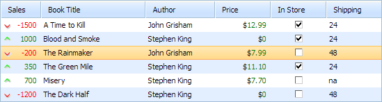

Managing the Selection
Selection in Grid is enabled by default, and the user can select some row by a single click.

The library provides the following API to support selection in Grid:
Methods
- selectRow - selects a row with the specified index (zero-based numbering).
- selectCell - selects a cell with the specified index (zero-based numbering) and the row that this cell belongs to.
- selectRowById - selects a row with the specified id.
- selectAll - selects all rows in the grid.
- getSelectedCellIndex - returns the column index of the currently selected cell.
- getSelectedRowId - returns the id of the currently selected row.
- clearSelection - clears the selection in the grid.
Events
- onBeforeSelect - fires before a row in the grid is selected.
- onRowSelect - fires after the user has clicked a row to select it.
- onSelectStateChanged - fires when the selection state is changed, e.g. a new row has been selected, the selection has been cleared, etc.
Related sample: Using Grid API Methods
When a cell is being selected, the grid automatically selects the row that this cell belongs to. On the other hand, in any selected row you have such an area as the selected cell which is:
- When the user clicks on the grid - the selected cell = the clicked cell .
- When the selectRow or selectRowById method is called - the selected cell = 1st cell of the row .
- When the selectCell method is called - the selected cell = the cell specified in the method.
So anytime you have a selection in the grid - you have 2 selection objects: a row and a cell.
When may you need to know the selected cell? For example, to detect which cell the user has clicked exactly or to open the editor for a specific cell.
Multiselection
To enable multiselect in the grid, call the enableMultiselect method:
Enabling multiselection
mygrid = new dhtmlXGridObject("gridbox");
mygrid.setImagePath("../../codebase/imgs/");
mygrid.setHeader("Sales,Book Title,Author,Price,In Store,Shipping");
mygrid.enableMultiselect(true); mygrid.init();
Related sample: Operations with clipboard
Users need to use Shift and Ctrl keys to select multiple rows.
Alternative selection
The library has 2 extension modes that provide alternative types of selection in the grid.
- Block Selection - provides the clipboard support.
- Cell Selection - provides the multi cell selection.
Note, API related to the default selection can't be used with the alternative types (as alternative types are not really a selection, they are just marking.
Block Selection for clipboard support
The Block Selection mode is used to provide the support for clipboard operations. It allows selecting cells by blocks for copying data to the clipboard. Read more information on working with the clipboard in the Clipboard Operations article.
To enable the mode, call the enableBlockSelection method:
mygrid = new dhtmlXGridObject("gridbox");
mygrid.setImagePath("../../codebase/imgs/");
mygrid.setHeader("Sales,Book Title,Author,Price,In Store,Shipping");
mygrid.enableBlockSelection(); mygrid.init();
Related sample: Copy to clipboard

Cell selection
dhtmlxGrid provides an extension "markers" (dhtmlxgrid_markers.js) that enables the possibility to select cells instead of rows in the grid.
To enable selecting by cells in the grid, call the enableMarkedCells method:
mygrid = new dhtmlXGridObject("gridbox");
mygrid.setImagePath("../../codebase/imgs/");
mygrid.setHeader("Sales,Book Title,Author,Price,In Store,Shipping");
mygrid.enableMarkedCells();(); mygrid.init();
To mark a cell, use the mark method (the method invokes the onCellMarked event):
//marks a cell
mygrid.mark('row1',0,true);
//unmarks a cell
mygrid.mark('row1',0,false);
To unmark all marked cells, use the unmarkAll method (the method invokes the onCellUnMarked event):
//marks cells
mygrid.mark('row1',0,true);
mygrid.mark('row2',0,true);
//unmarks all cells
mygrid.unmarkAll();
To get all marked cells, use the getMarked method:
mygrid.getMarked();
Disabling selection
To disable selection, return false from the onBeforeSelect event's handler:
myGrid.attachEvent("onBeforeSelect", function(row,old_row){
return false;
});